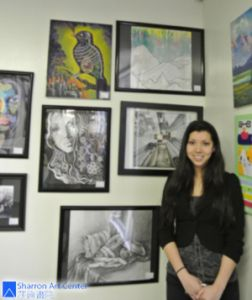

莎伦画院法拉盛分校申请大学作品集辅导—Sonya如愿进第一志愿
Sonya Mantell
家住纽约长岛，就读East Meadow 高中的Sonya Mantell到莎伦画院法拉盛分校（又称纽约莎伦艺术设计中心），学画时间很短。当时该分校刚设立，她是首位直接在纽约分校学画，并申请大学的莎伦学生。（其他的莎伦纽约学生都是到新州总校学习，再申请入大学名校)。
莎伦画院在新州 South Brunswick总校占地5英亩，2幢建筑楼，在新州 Piscataway、Parsippany另设分校，在纽约法拉盛设立纽约莎伦艺术设计中心，为莎伦画院第4间学校。
Sonya的母亲兴奋地表示，到莎伦画院使Sonya的人生改变！ Sonya从小喜欢画画，只在4岁时短暂的请了家教。其后一直只在学校修美术课。孩子并不上中文学校，但是，一 天Sonya的妈妈偶然走进了长岛中文学校，并一眼看到莎伦画院艺术讲座的小招贴，就去听了讲座，听后感觉很好，回家与先生商量决定送Sonya去学画。怕孩子不高兴，所以半蒙半骗—–。Sonya到了莎伦画院分校后，感觉并不太好，特別是两位老师实在年轻。但开始上课之后感觉受益匪浅。从此安心学习，不断加课。在参观大学时，她突然决定大学要读建筑系。目前，她如愿以偿地进入全美建筑排名第一的康奈尔大学建筑系（录取率低于哈佛），并同时被全美艺术和设计第一名的罗得岛设计学院(RISD)录取。这对于数学和艺术皆具有天质的Sonya无疑是人生中最美妙的开端。
Sonya在今年24万人参赛的“2013年全美Scholistic写作和艺术大赛”（又称全美青少年艺术家大赛）比赛中，她独得 了绘画3枚金牌、1枚银牌、和两个佳作。她还获得2012年国会艺术大赛第一名，作品和其他另3位莎伦学生一起在华盛顿国会大厦展出一年。
独特的“莎伦教学法”，严谨的莎伦管理制度，崔明子和Jessia老师认真负责的辅导，与学生的勤奋和天资，父母的全力支持，缺一不可。两位老师都是莎伦画院昔日的学生，分別具有罗得岛设计学院和纽约库克大学美术学院（Cooper Union）背景 。
莎伦画院每年学生都进入大学名校，2012和2013年各有50多为学生进入哈佛、耶鲁以及美国、欧洲艺术及建筑第一名的设计学院。不学艺术设计的有一半多以艺术做加分。
莎伦画院将帮助更多的学生改变命运，实现梦想！
(2013)
Copyright © 2013 www.sharronartcenter.com
All artworks original, all rights reserved,do not plagiarize. Do not use text without permission.
版权 © 2013 www.sharronartcenter.com 所有艺术作品皆为原创 版权所有。盗用必究。 文字非经同意不得转载。
Sharron Liu 刘莎伦
Categories
Education
莎伦画廊
艺术经营
视觉焦点
家长必读
教育反馈
教育案例
校友踪迹
Life
生活方式
简约书签
长话短说
走走停停
心情切片
文图交织
信仰见证
Sharron Art Center
Sharron Art Center 奖项与画展
Sharron Art Center 莎伦画院
Sharron Art Center 暑期特別计划
Recent Posts
狮会国际和平海报赛 王丹玫夺新州冠军
如何挑选申请大学的艺术作品集（五）
陈思佳自述（中译）：
Lydia’s Self Description
陈思佳获视觉艺术大奖
李虹霖 新生代高中生画家
林宛澄自由与希望获肯定
吕思瑶 夺全美绘画金匙奖
如何桃选申请大学的艺术作品集（四）
昼夜伦敦
航行
如何挑选申请大学的艺术作品（三）
如何挑选申请大学的艺术作品（二）
如何挑选申请大学的艺术作品（一）
慈善画展感想
深圳学生林宛澄获奖自述
莎伦校友Ellen荣获美国插图家协会大奖
思考教育的能力
New York Student James Chen’s Speech
大学录取，亚裔被“反向歧视”， 怎么办？
莎伦画院大学名校校友毕业汇报成绩可喜
教育怪圈
国际航空绘画赛 新州3学子夺奖
Barnabas Luke-上海旧日＂中国银行＂大厦建筑设计师的美国孙子
绕开辣手的教育问题？
莎伦学生William重返莎伦母校与伦敦中央圣马丁学院面试官愉快重晤
我的神奇和极简洁的导师
美国跨国公司总裁－上海浦东分享女儿升学心得
分享女儿喜讯
儿子的喜讯
国际环保绘画大赛 新州华生包前三
方姝获太空基金会艺术赛冠军
专致坚忍-莎伦学生Lydia被常春藤宾大华顿商学院提前录取
Teacher Danielle is So Cool
莎伦学生Linda、Annie被普林斯顿大学提前录取-普通亚裔学子的名校之途
如何分清批评或中肯建议？
我就是我，一个用宇宙都不能交换的我
“多动症儿童”的常春藤之路－莎伦学生Rita被耶鲁提前录取
莎伦画院的大学名校校友－主编女性杂志
一种无法记录的延续
冬天的孤树
SAC’s Alumni—Mono’s speech in Sharron Art Center
透明的花
2015年全美青年艺术大赛莎伦画院得奖学生之一的反馈
One of the Reflects from the Student who won the 2015 The National Scholastics Art Awards Competition
莎伦的耶鲁校友Mona在莎伦画院暑期加强营的演讲絮语
爱丁城堡 转角的地方
莎伦学生Grace Chen — 品格的表率
普通亚裔家庭子女的名校竞争之途
过度追求成功是祸是福